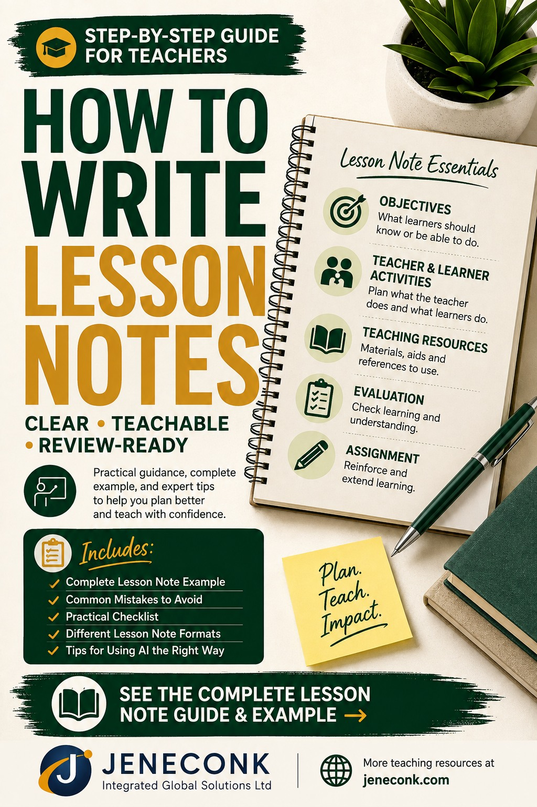
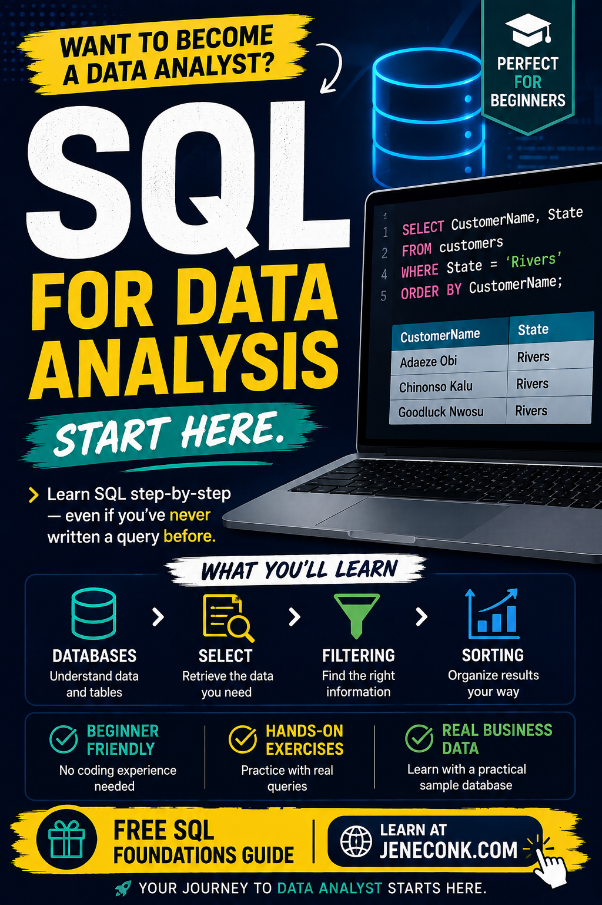

Teaching and Education
Plan lessons, write clear notes, design assessments, prepare report comments and make responsible classroom decisions.
Browse education guidesJENECONK Learning Resource Center
Start with the question you need to answer. These original guides provide definitions, worked examples, checklists, exercises and practical cautions that stand on their own. A JENECONK product or training pathway is linked only when it is a relevant next step.
Last reviewed: 5 September 2026.
Choose a learning path
Each path leads to the strongest currently published material in that subject. Pages still being developed are not presented as finished resources.
Plan lessons, write clear notes, design assessments, prepare report comments and make responsible classroom decisions.
Browse education guidesUnderstand prompting, review AI output, introduce AI safely and connect tools to accountable human workflows.
Browse AI guidesMove from business questions to clean records, useful queries, summaries and evidence-based interpretation.
Browse analysis guidesUse formulas, trackers, tables and SQL queries to organise everyday school and business information.
Browse Excel and SQLLearn packet-analysis foundations and safer ways to observe, filter and report authorised network evidence.
Browse networking guidesCreate better forms, documents, schedules and practical work products using repeatable methods.
Browse professional guidesStart here
These are among the deepest JENECONK resources and include practical material readers can apply without buying a product.

Follow 13 practical steps, compare lesson documents, write measurable objectives, review a complete Mathematics example and check ten common mistakes.
Read the lesson-note guide
Set up PostgreSQL and DBeaver, build the NovaMart practice database, write real queries, complete exercises and reveal worked answers.
Start the SQL guide
Understand the workspace, capture safely, use display filters, inspect common protocols, complete six labs and write an evidence-based report.
Start the Wireshark guideTeaching and Education
These guides address the documents and decisions teachers face repeatedly. They explain the work before recommending software.
Build objectives, activities, resources, evaluation and assignment into one teachable daily document.
Read the complete guideMap curriculum topics, objectives, resources and assessment direction across a term.
Read the scheme guideChoose suitable evidence, combine assessment methods and avoid treating one score as the whole learner.
Read the assessment guideUse AI to support curriculum-aligned planning while keeping teacher judgement, differentiation and checking visible.
Read the planning guidePrepare rubrics and feedback structures without surrendering fairness, privacy or final grading decisions.
Read the feedback guideCompare tools by real classroom task, free-access limits, pricing considerations and the time they may return.
Compare the toolsAI and Automation
Good AI work starts with a defined task, enough context, clear constraints and a human decision about the result. Automation adds triggers and hand-offs, but it does not remove accountability.
Learn the eight prompting layers, practise professional scenarios and understand where automation fits into a controlled workflow.
Open the professional guideApply the CLASS framework to lesson notes, assessments, reports, parent messages and teaching visuals.
Use the teacher frameworkDefine approved use, safeguarding, privacy, assessment boundaries, procurement, accountability and incident response.
Open the policy frameworkConnect meetings, communications, policy work and procurement to reviewable administrative workflows.
Read the administrator guidePlan adoption around real educational needs, staff readiness, privacy, review and measurable use cases.
Read the school guideSee dated photographs, video and careful records from practical JENECONK delivery without inflated outcome claims.
View documented deliveryData Analysis
Useful analysis begins before a chart: define the question, understand each field, identify missing or inconsistent values, preserve the raw data and make every transformation explainable.
Learn tables, data types, keys, relationships, filtering, sorting and conditional queries through the NovaMart practice database.
Follow the SQL courseTrack stock movements, reorder points, supplier details, inventory value and physical-count differences.
Build an inventory workbookStructure attendance, results, fees and class records so summaries can be traced back to reliable source entries.
Read the school-data guideExcel and SQL
Excel is often the fastest place to calculate, review and communicate a manageable dataset. SQL becomes essential when information is stored across structured tables and needs repeatable querying.
Use ten practical formulas for sales, stock, invoices, profit, pricing and monthly performance.
Work through the formulasMonitor issued, paid, part-paid, disputed, overdue and outstanding invoices with a controlled weekly routine.
Build the trackerUse the complete beginner guide as a reference for SELECT, aliases, DISTINCT, WHERE, IN, BETWEEN, LIKE, NULL, ORDER BY and LIMIT.
Open the SQL referenceCybersecurity and Networking
The Wireshark guide explains capture interfaces, the three analysis panes, packet counts, time ranges, common protocols and display filters. Six practical labs move from observation to a short evidence-based report.
Only capture traffic on systems and networks you own or are authorised to test. Do not publish packet contents that contain credentials, personal information or confidential organisational data.
Technical and Professional Skills
These resources help readers produce a usable result: a tested form, a balanced timetable, a professional document or a structured learning plan.
Build from a blank form, choose appropriate question types, test the response path and share it safely.
Build a form step by stepBalance weekly subject requirements, teacher availability, fixed periods, breaks, rooms and workload before publishing.
Read the planning guideChoose and structure proposals, invoices, letters and policies around the reader's decision and the evidence available.
Read the document guideUse calculators and generators for grades, fees, averages, invoices, lesson duration and school schedules.
Open the tools directoryAbout this library
It is JENECONK's reviewed library of original practical guidance for educators, professionals, analysts and technology learners. Resources are selected for independent usefulness, not merely because they can lead to a product.
JENECONK distinguishes instructional material from product information, identifies important limits and avoids publishing private application configuration, API credentials, proprietary prompts, internal scoring logic or protected system architecture. See the Editorial Policy and Content Transparency page for the publishing approach.